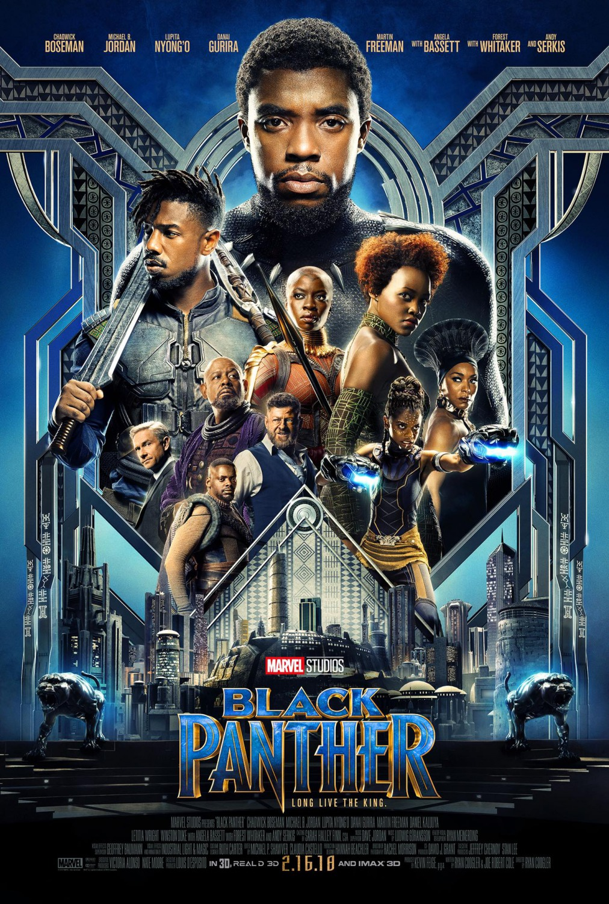
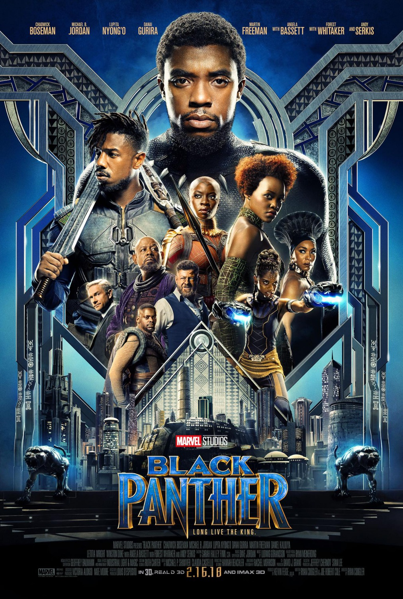

LUDWIG GÖRANSSON
BIO
Born : Sep 1, 1984
Nationality : Swedish
Education : Royal College of Music & USC Thornton School of Music
Occupation : Composer, Conductor, Songwriter, Record Producer
Genres : Film score, Big band, Classical, Disco, Jazz, R&B, Electronic, Psychdella, Swing, Hip Hop
Website : ludwiggöransson.com
ABOUT
Ludwig Göransson is a versatile Swedish composer, conductor, songwriter, and record producer. He began his musical journey under the guidance of his father, Tomas, a guitar teacher, and later graduated from the Stockholm Royal College of Music. Göransson is best known for his collaboration with filmmaker Ryan Coogler, most notably for the acclaimed score of 'Black Panther,' which earned him an Academy Award for Best Original Score. He has also composed for other notable films, including 'Creed,' 'Creed II,' and 'Tenet,' showcasing his ability to work across various musical genres, from orchestral compositions to pop and hip-hop.
MOVIES


 
